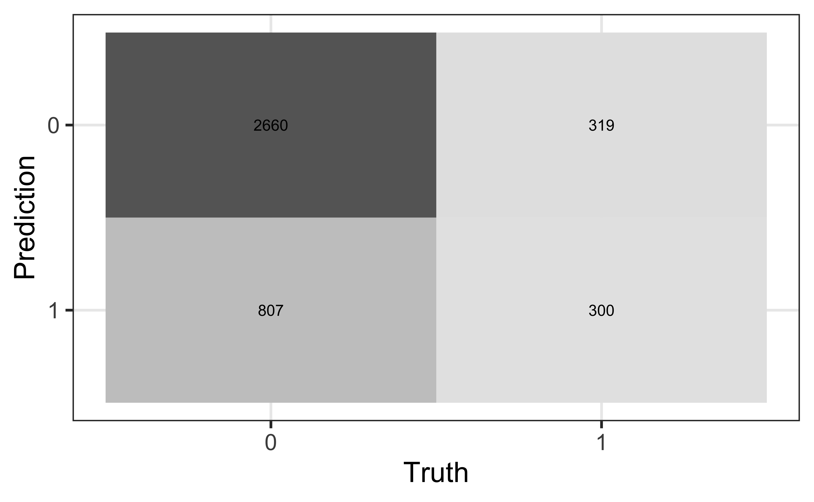

# load packages
library(tidyverse)
library(tidymodels)
library(openintro)
library(knitr)
library(kableExtra) # for table embellishments
library(Stat2Data) # for empirical logit
# set default theme and larger font size for ggplot2
ggplot2::theme_set(ggplot2::theme_bw(base_size = 20))Logistic Regression: Model comparison
Announcements
Project presentations in March 31 lab
- Will email presentation order and feedback assignments
Statistics experience due April 15
Topics
Comparing logistic regression models using
Drop-in-deviance test
AIC
BIC
Computational setup
Data
Risk of coronary heart disease
This data set is from an ongoing cardiovascular study on residents of the town of Framingham, Massachusetts. We want to examine the relationship between various health characteristics and the risk of having heart disease.
high_risk:- 1: High risk of having heart disease in next 10 years
- 0: Not high risk of having heart disease in next 10 years
age: Age at exam time (in years)education: 1 = Some High School, 2 = High School or GED, 3 = Some College or Vocational School, 4 = CollegecurrentSmoker: 0 = nonsmoker, 1 = smokertotChol: Total cholesterol (in mg/dL)
Data
# A tibble: 4,086 × 6
age education TenYearCHD totChol currentSmoker high_risk
<dbl> <fct> <dbl> <dbl> <fct> <fct>
1 39 4 0 195 0 0
2 46 2 0 250 0 0
3 48 1 0 245 1 0
4 61 3 1 225 1 1
5 46 3 0 285 1 0
6 43 2 0 228 0 0
7 63 1 1 205 0 1
8 45 2 0 313 1 0
9 52 1 0 260 0 0
10 43 1 0 225 1 0
# ℹ 4,076 more rowsModeling risk of coronary heart disease
Using age, totChol, and currentSmoker
| term | estimate | std.error | statistic | p.value | conf.low | conf.high |
|---|---|---|---|---|---|---|
| (Intercept) | -6.673 | 0.378 | -17.647 | 0.000 | -7.423 | -5.940 |
| age | 0.082 | 0.006 | 14.344 | 0.000 | 0.071 | 0.094 |
| totChol | 0.002 | 0.001 | 1.940 | 0.052 | 0.000 | 0.004 |
| currentSmoker1 | 0.443 | 0.094 | 4.733 | 0.000 | 0.260 | 0.627 |
Review: ROC Curve + Model fit
high_risk_aug <- augment(high_risk_fit)
roc_curve_data <- high_risk_aug |>
roc_curve(high_risk, .fitted, event_level = "second")
#calculate AUC
high_risk_aug |>
roc_auc(high_risk, .fitted, event_level = "second")# A tibble: 1 × 3
.metric .estimator .estimate
<chr> <chr> <dbl>
1 roc_auc binary 0.697Review: Classification
We will use a threshold of 0.2 to classify observations

Review: Classification

Compute the misclassification rate.
Compute sensitivity and explain what it means in the context of the data.
Compute specificity and explain what it means in the context of the data.
Drop-in-deviance test
Which model do we choose?
| term | estimate |
|---|---|
| (Intercept) | -6.673 |
| age | 0.082 |
| totChol | 0.002 |
| currentSmoker1 | 0.443 |
| term | estimate |
|---|---|
| (Intercept) | -6.456 |
| age | 0.080 |
| totChol | 0.002 |
| currentSmoker1 | 0.445 |
| education2 | -0.270 |
| education3 | -0.232 |
| education4 | -0.035 |
Log likelihood
\[ \begin{aligned} \log L&(\hat{p}_i|x_1, \ldots, x_n, y_1, \dots, y_n) \\ &= \sum\limits_{i=1}^n[y_i \log(\hat{p}_i) + (1 - y_i)\log(1 - \hat{p}_i)] \end{aligned} \]
Measure of how well the model fits the data
Higher values of \(\log L\) are better
Deviance = \(-2 \log L\)
- \(-2 \log L\) follows a \(\chi^2\) distribution with \(n - p - 1\) degrees of freedom
Comparing nested models
Suppose there are two nested models:
- Reduced Model includes predictors \(x_1, \ldots, x_q\)
- Full Model includes predictors \(x_1, \ldots, x_q, x_{q+1}, \ldots, x_p\)
We want to test the hypotheses
\[ \begin{aligned} H_0&: \beta_{q+1} = \dots = \beta_p = 0 \\ H_a&: \text{ at least one }\beta_j \text{ is not } 0 \end{aligned} \]
To do so, we will use the Drop-in-deviance test, also known as the Nested Likelihood Ratio test
Drop-in-deviance test
Hypotheses:
\[ \begin{aligned} H_0&: \beta_{q+1} = \dots = \beta_p = 0 \\ H_a&: \text{ at least one }\beta_j \text{ is not } 0 \end{aligned} \]
. . .
Test Statistic: \[\begin{aligned}G &= \text{Deviance}_{reduced} - \text{Deviance}_{full} \\ &= (-2 \log L_{reduced}) - (-2 \log L_{full})\end{aligned}\]
. . .
P-value: \(P(\chi^2 > G)\), calculated using a \(\chi^2\) distribution with degrees of freedom equal to the difference in the number of parameters in the full and reduced models
\(\chi^2\) distribution

Should we add education to the model?
First model, reduced:
high_risk_fit_reduced <- glm(high_risk ~ age + totChol + currentSmoker,
data = heart_disease, family = "binomial"). . .
Second model, full:
Write the null and alternative hypotheses in words and mathematical notation.
Should we add education to the model?
Calculate deviance for each model:
(dev_reduced <- glance(high_risk_fit_reduced)$deviance)[1] 3224.812(dev_full <- glance(high_risk_fit_full)$deviance)[1] 3217.6. . .
Drop-in-deviance test statistic:
(test_stat <- dev_reduced - dev_full)[1] 7.212113Should we add education to the model?
Calculate the p-value using a pchisq(), with degrees of freedom equal to the number of new model terms in the second model:
pchisq(test_stat, 3, lower.tail = FALSE) [1] 0.06543567. . .
What is your conclusion?
Drop-in-Deviance test in R
We can use the
anovafunction to conduct this testAdd
test = "Chisq"to conduct the drop-in-deviance test
. . .
anova(high_risk_fit_reduced, high_risk_fit_full, test = "Chisq") |>
tidy() |> kable(digits = 3)| term | df.residual | residual.deviance | df | deviance | p.value |
|---|---|---|---|---|---|
| high_risk ~ age + totChol + currentSmoker | 4082 | 3224.812 | NA | NA | NA |
| high_risk ~ age + totChol + currentSmoker + education | 4079 | 3217.600 | 3 | 7.212 | 0.065 |
Model selection using AIC and BIC
AIC & BIC
Estimators of prediction error and relative quality of models:
. . .
Akaike’s Information Criterion (AIC)1: \[AIC = -2\log L + 2(p+1)\]
. . .
Schwarz’s Bayesian Information Criterion (BIC)2: \[ BIC = -2\log L + \log(n)\times(p+1)\]
AIC & BIC
\[ \begin{aligned} & AIC = \color{blue}{-2\log L} \color{black}{+ 2(p+1)} \\ & BIC = \color{blue}{-2\log L} + \color{black}{\log(n)\times(p+1)} \end{aligned} \]
. . .
First Term: Decreases as p increases
AIC & BIC
\[ \begin{aligned} & AIC = -2\log L + \color{blue}{2(p+1)} \\ & BIC = -2\log L + \color{blue}{\log(n)\times(p+1)} \end{aligned} \]
Second term: Increases as p increases
Using AIC & BIC
\[ \begin{aligned} & AIC = -2\log L + \color{red}{2(p+1)} \\ & BIC = -2 \log L + \color{red}{\log(n)\times(p+1)} \end{aligned} \]
Choose model with the smaller value of AIC or BIC
If \(n \geq 8\), the penalty for BIC is larger than that of AIC, so BIC tends to favor more parsimonious models (i.e. models with fewer terms)
AIC from the glance() function
Let’s look at the AIC for the model that includes age, totChol, and currentSmoker
glance(high_risk_fit)$AIC[1] 3232.812. . .
Calculating AIC
- 2 * glance(high_risk_fit)$logLik + 2 * (3 + 1)[1] 3232.812Comparing the models using AIC
Let’s compare the full and reduced models using AIC.
glance(high_risk_fit_reduced)$AIC[1] 3232.812glance(high_risk_fit_full)$AIC[1] 3231.6Based on AIC, which model would you choose?
Comparing the models using BIC
Let’s compare the full and reduced models using BIC
glance(high_risk_fit_reduced)$BIC[1] 3258.074glance(high_risk_fit_full)$BIC[1] 3275.807Based on BIC, which model would you choose?
Application exercise
Footnotes
Akaike, Hirotugu. “A new look at the statistical model identification.” IEEE transactions on automatic control 19.6 (1974): 716-723.↩︎
Schwarz, Gideon. “Estimating the dimension of a model.” The annals of statistics (1978): 461-464.↩︎